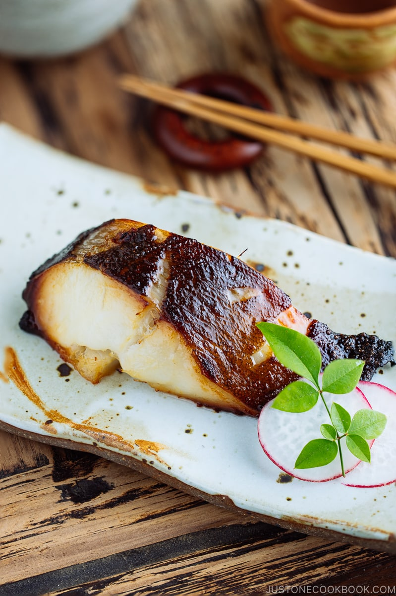

Miso Cod (Black Cod with Miso)

Description
Make Nobu's famous Miso Cod at home today! Also known as
Black Cod with Miso, this classic Japanese seafood dish is
delicate, buttery, and melt-in-your-mouth. You will be surprised
at how easy it is to pull this off at home.
Ingredients
- 4 fillets sablefish (gindara) (about 1 inch (2.5 cm) thick; you can also use salmon and sea bass)
- 2 tsp kosher salt (Diamond Crystal; use half for table salt)
- 2 Tbsp sake (for cleaning and removing the odor of the fish)
For the miso marinade
- 6 Tbsp Saikyo miso (Kyoto-style white miso)
- 3 Tbsp mirin
- 3 Tbsp sake
Steps
To marinate the fish(two to three days before serving)
- Sprinkle salt over the fish and set it aside for 30 minutes. The salt will draw out excess moisture and reduce the odor of the fish.
- In a bowl, add the saikyo miso, mirin, and sake (and sugar, if you are using regular white miso.)
- Mix it all together and pour the marinade into a flat-bottomed airtight container.
- Pour 2 Tbsp sake over the fish to rinse off the salt. Gently pat dry with a paper towel to remove the moisture.Do not wash the fish under running water.
- Place the fish in the container and coat both sides of the fish with the marinade.
- Slather the fillets with the marinade. Cover the container and keep it in the refrigerator
for up to 2-3 days. If you prefer your fish less salty (and don't eat this dish with rice, for example),
you can reduce the marination time to 1 day (or even several hours.) It depends on your preference.
To remove the fish from the marinade
- With your fingers, wipe the marinade off the fish completely. Do not leave any excess marinade on the fish; otherwise, it will burn easily. At this point, you can individually wrap the fish with plastic wrap and store it in a freezer bag for up to 2-3 weeks.
Defrost in the refrigerator before cooking.
To prepare the fish for cooking
- Place the fish skin side up on a baking sheet lined with parchment paper/silicone mat (for baking) or foil (for broiling).
To Bake
- Preheat the oven to 400°F (200ºC) with a rack placed in the center of the oven. For a convection oven, reduce the cooking temperature by 25ºF (15ºC).
Bake the fish on the parchment paper until the surface is blistered and browned a bit, about 20 minutes. You do not need to flip the fish.